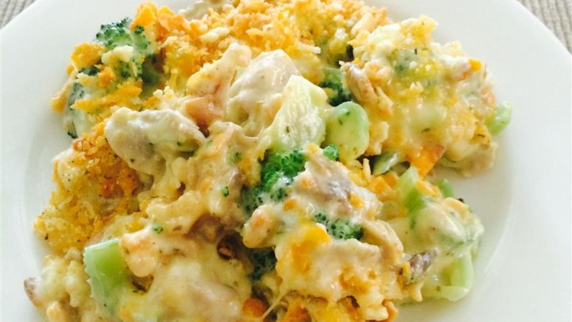

Broccoli Chicken Divan

Ingredients
- 1 pound chopped fresh broccoli
- 1 1/2 cups cubed, cooked chicken meat
- 1 (10.75 ounce) can condensed cream of broccoli soup
- 1/3 cup milk
- 1/2 cup shredded Cheddar cheese
- 1 tablespoon butter, melted
- 2 tablespoons dried bread crumbs
Directions
- Preheat oven to 450 degrees F (230 degrees C).
- Place the broccoli in a saucepan with enough water to cover. Bring to a boil, and cook 5 minutes, or until tender. Drain.
- Place the cooked broccoli in a 9 inch pie plate. Top with the chicken. In a bowl, mix the soup and milk, and pour over the chicken. Sprinkle with Cheddar cheese. Mix the melted butter with the bread crumbs, and sprinkle over the cheese.
- Bake in the preheated oven for 15 minutes, or until bubbly and lightly brown.